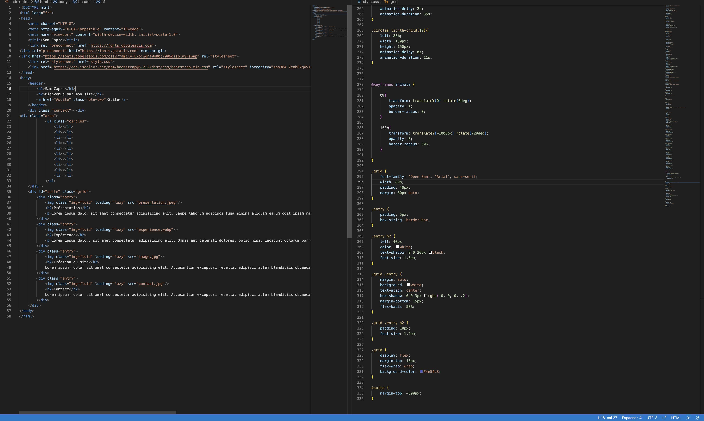

Présentation
Je m'appelle Sam Capra, je suis né le 20 juin 2007 à Valence. J'habite dans la drome à saint Rambert d'Albon. Je suis actuellement en classe de seconde mtne à Annonay au lycée Marc Seguin. J'ai commencé par faire de la cybersécurité a mes 12-13 ans puis j'ai commencé le développement web à mes 14 ans. Je maitrise le HTML et le Css et je viens de commencer Javascript. / Jeudi 17 Novembre 2022 /
Expérience
Je connais le monde du travail, le monde de l'entreprise. J'ai effectue un stage d'observation d'une semaine en 3e. J'effectue actuellement un stage de 3 semaines dans le développement web, un autre stage de 3 semaines est prévu dans l'année. Je sais créer des sites en HTML / Css. De plus j'ai réalisé ce site lors de mon stage. / Jeudi 27 Novembre 2022 /

Création du site
J'ai réalisé ce site en 2 jours après la formation HTML Css que j'ai suivi lors de mon stage. Il y a eu plusieurs "prototypes" puis la version finale qui est celle-là. Nous pouvons voir le code HTML et Css du site sur l'image au-dessus. / Jeudi 27 Novembre 2022 /
Contact
Pour me contacter veuillez m'envoyer un mail à l'adresse suivante : caprasam.pro@gmail.com